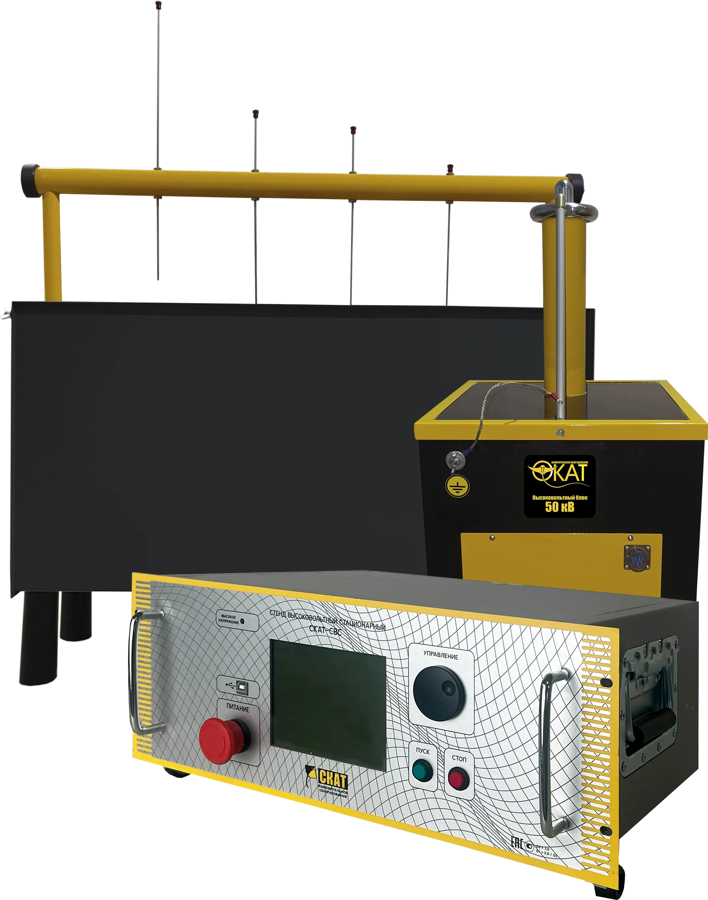

High-Voltage Test Systems
SKAT-SVS Series High-Voltage Stationary Test Benches
Complete stationary HV test systems for cables, PPE, and insulators.
The SKAT-SVS series are comprehensive, stationary high-voltage test systems designed for acceptance and maintenance testing of power cables, insulators, and PPE (personal protective equipment) such as dielectric boots, gloves, and tools. Available in three configurations with 20 kV to 100 kV modules, these systems offer up to 4-channel leakage current measurement and fully programmable test profiles.
About the product
The SKAT-SVS series are comprehensive, stationary high-voltage test systems designed for a wide range of acceptance and maintenance testing. They are capable of testing power cables, insulators, and PPE (personal protective equipment) such as dielectric boots, gloves, and tools.
The system features 4-channel leakage current measurement, programmable test profiles (10 presets), automatic breakdown detection, and a 19\" rack-mountable control unit. Separate HV modules ensure system scalability and flexibility. The test bath is designed for efficient testing of boots, gloves, and insulated tools with up to 4 simultaneous channels.
SKAT-SVS: Product Overview
A general overview of the instrument's key features and capabilities.
Product documents
Related products

Technical specifications
Note: Specifications are subject to change without notice. For custom ranges and configurations, please contact our sales team.
FAQ
Interpreting test results
For detailed guidance on testing procedures and result interpretation, refer to your equipment's user manual and relevant IEC standards.
Troubleshooting & Software updates
- Ensure proper grounding: Check high-voltage connections. Verify the test object is correctly positioned.
- Connection error: Check cables between the control unit and HV blocks.
- Overheating: Ensure ventilation is not blocked.
Application and academic support
For detailed application notes, technical guides, and academic resources on high-voltage testing, please refer to the knowledge base on our website or contact our technical support team.
Contact Support